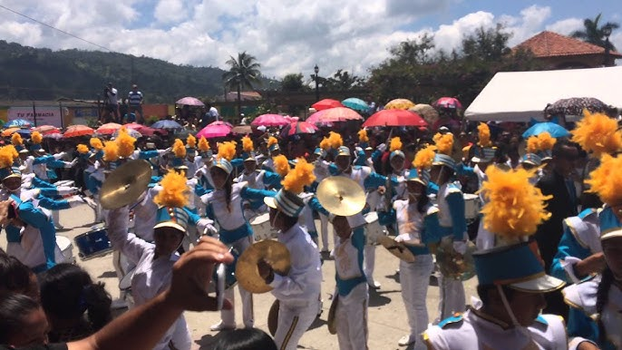

IAM
En el instituto Armando Martínez, surgió la banda en el año 2009, con instrumentos de viento y percusión dirigida por maestros de la institución junto con instructores. Fundaron lo que hoy en día conocemos como la banda MIXTA "IAM", dicha banda ha participado en competencias llevándose el segundo lugar, el primer lugar. Se caracteriza por ser una banda disciplinada y con un ritmo inolvidable.

Instrumentos
- Trompetas
- Saxofón
- Liras
- Güiros
- Tambores
- Tarolas
- Bombos